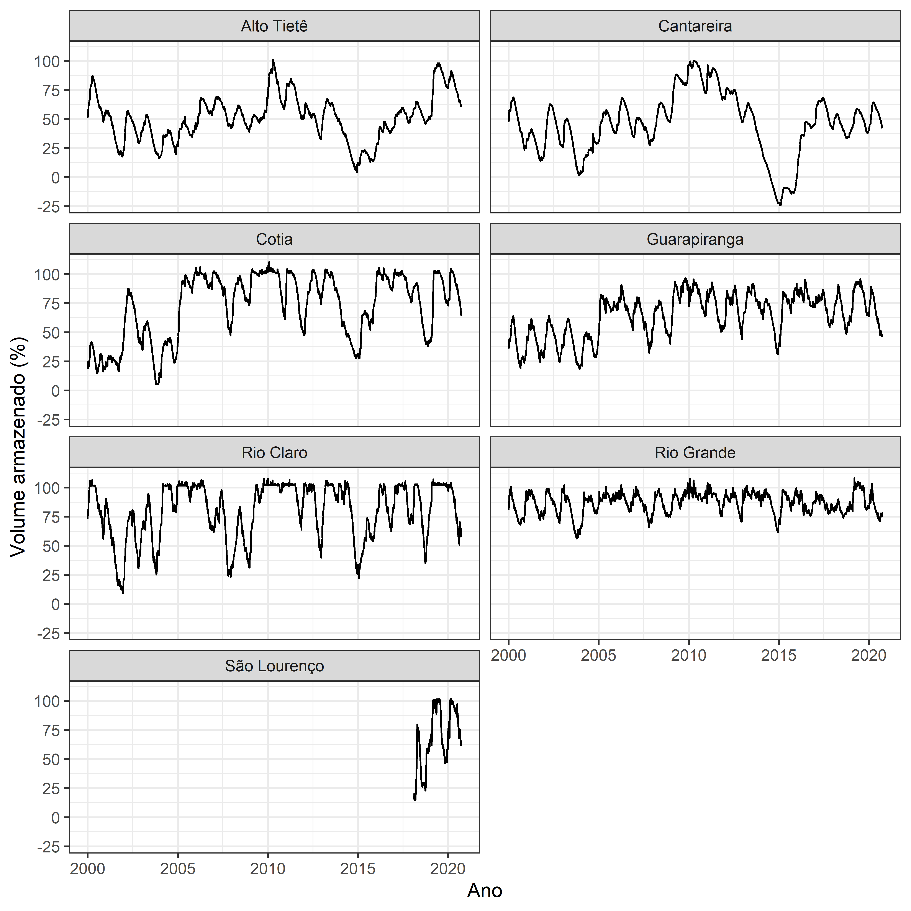

PACOTE EM DESENVOLVIMENTO
O objetivo deste pacote é disponibilizar a base de dados sobre volume armazenado em mananciais de abastecimento público na Região Metropolitana de São Paulo (SP - Brasil).
Os dados foram obtidos no Portal dos Mananciais da SABESP, através dos dados disponíveis na API.
Existem dois arquivos disponíveis, em que a diferença é o período dos dados. Caso você não utilize R e queira ter acesso aos dados em formato .csv, os mesmos podem ser acessados através dos links a seguir. Lembrete: o arquivo foi salvo em formato “separado por ponto e vírgula”, e com encoding “UFT-8”.
mananciais- 2000 à 2019 - Baixar versão.csvmananciais_atualizado- 2000 à 2020 (parcial) - Baixar versão.csv, pode estar desatualizado.
Instalação
A versão em desenvolvimento deste pacote pode ser instalada através do GitHub utilizando:
# install.packages("devtools") devtools::install_github("beatrizmilz/mananciais")
Exemplos
Abaixo segue um exemplo das bases disponíveis:
library(mananciais) str(mananciais) #> Classes 'tbl_df', 'tbl' and 'data.frame': 44529 obs. of 8 variables: #> $ data : Date, format: "2000-01-01" "2000-01-01" ... #> $ nome : chr "Cantareira" "Alto Tietê" "Guarapiranga" "Cotia" ... #> $ volume_porcentagem: num 47.1 50.9 36 18.8 81 73.2 47.8 51.4 36.4 18.8 ... #> $ volume_variacao : num 0.3 0.1 0 0.9 0.4 -0.2 0.7 0.5 0.4 0 ... #> $ volume_operacional: num 365.51 196.03 64.8 2.65 91.69 ... #> $ prec_dia : num 30.9 26 47.2 0 0 5.2 29.1 47.3 9.2 33.2 ... #> $ prec_mensal : num 30.9 26 47.2 0 0 5.2 60 73.3 56.4 33.2 ... #> $ prec_hist : num 255 238 225 218 235 ... str(mananciais_atualizado) #> Classes 'tbl_df', 'tbl' and 'data.frame': 46426 obs. of 8 variables: #> $ data : Date, format: "2020-01-01" "2020-01-01" ... #> $ nome : chr "Cantareira" "Alto Tietê" "Guarapiranga" "Cotia" ... #> $ volume_porcentagem: num 40.3 76.6 64 73.4 82.6 97.6 58.8 40.4 76.4 63.6 ... #> $ volume_variacao : num -0.1 -0.2 -0.5 -0.4 -0.3 -0.5 -0.1 0.1 -0.2 -0.4 ... #> $ volume_operacional: num 396 429.2 109.6 12.1 92.7 ... #> $ prec_dia : num 0.2 0 0.6 0 0 0 0 16.6 10.2 1.6 ... #> $ prec_mensal : num 0.2 0 0.6 0 0 0 0 16.8 10.2 2.2 ... #> $ prec_hist : num 263 246 229 225 251 ...
Exemplo de tabela
| data | nome | volume_porcentagem | volume_variacao | volume_operacional | prec_dia | prec_mensal | prec_hist |
|---|---|---|---|---|---|---|---|
| 2020-09-27 | Cantareira | 42.1 | -0.2 | 413.23628 | 0 | 22.2 | 83.9 |
| 2020-09-27 | Alto Tietê | 60.9 | -0.2 | 341.09546 | 0 | 19.1 | 80.0 |
| 2020-09-27 | Guarapiranga | 46.9 | -0.1 | 80.25369 | 0 | 11.0 | 77.8 |
| 2020-09-27 | Cotia | 64.4 | -0.4 | 10.63207 | 0 | 6.6 | 82.5 |
| 2020-09-27 | Rio Grande | 78.0 | -0.2 | 87.52755 | 0 | 25.4 | 95.0 |
| 2020-09-27 | Rio Claro | 63.5 | -0.5 | 8.67788 | 0 | 89.8 | 141.6 |
| 2020-09-27 | São Lourenço | 64.4 | -0.5 | 57.16546 | 0 | 19.0 | 115.9 |
Desde o início dos dados
library(ggplot2) mananciais_atualizado %>% ggplot() + geom_line(aes(x = data, y = volume_porcentagem)) + scale_y_continuous(breaks = c(-25, 0, 25, 50, 75, 100)) + facet_wrap( ~ nome, ncol = 2) + theme_bw() + labs(x = "Ano", y = "Volume armazenado (%)")

Apenas ano atual
mananciais_atualizado %>% dplyr::mutate(ano = lubridate::year(data)) %>% dplyr::filter(ano == 2020) %>% ggplot() + geom_line(aes(x = data, y = volume_porcentagem)) + scale_y_continuous(breaks = c(-25, 0, 25, 50, 75, 100)) + facet_wrap( ~ nome, ncol = 2) + theme_bw() + labs(x = "Meses", y = "Volume armazenado (%)")